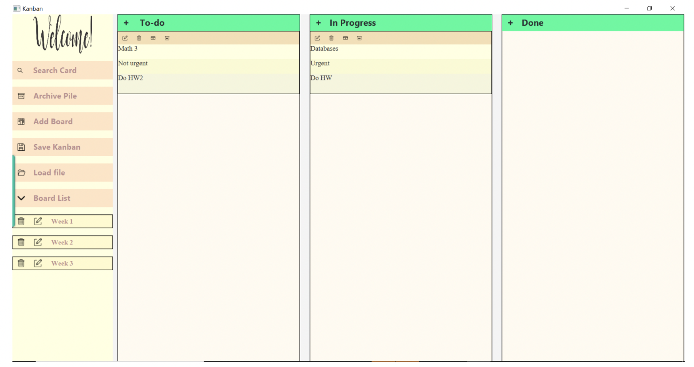
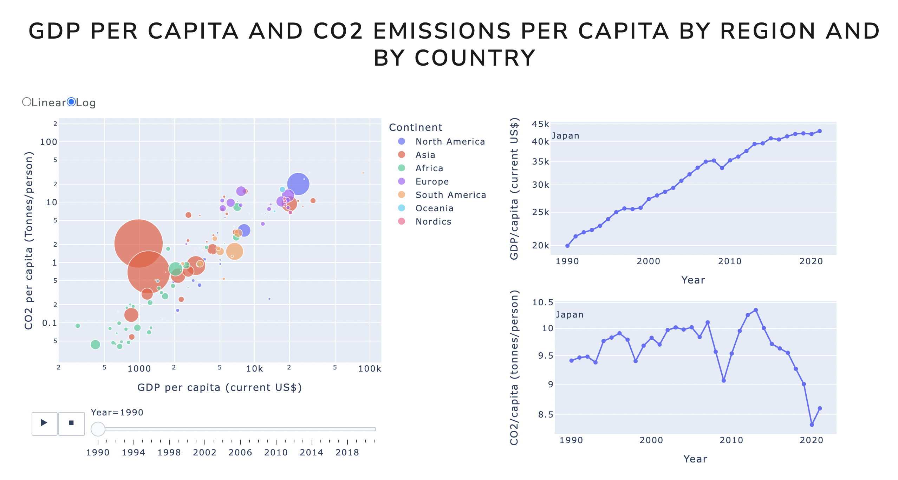
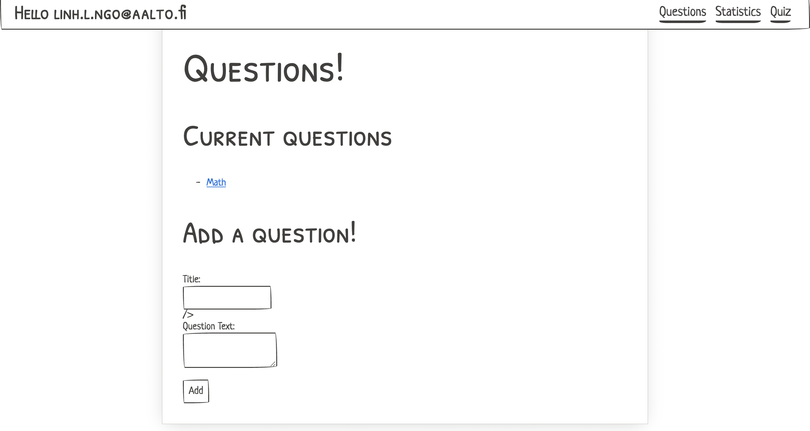
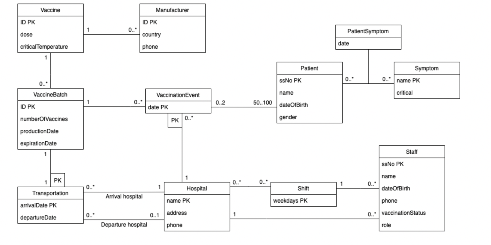

Projects
Kanban Board App
Scala - Unified Modeling Language - Unit Testing - JSON - ScalaFx - Git
I have always felt motivated to get my work done. I discovered that Kanban Board as a great idea for easily manipulated real-time adjustments to keep track of task status, workloads, and other pertinent task information. Therefore, I decided to apply my programming skill to build a Kanban-inspired app in Scala that allows users create and use boards for task management.

Climate Change Communication Website
Python — Data Exploration — Data Cleaning — Data Visualization and Modeling — Dash — Heroku
Climate change is one of the most significant challenge that humanity is currenly facing. Economic and population growth comes with more emissions. The emissions are distributed globally and over a wide range of societal activities, and are likely to cause widespread social, economic, and ecosystem damage if not limited. Therefore, it is important that all countries in the world try to tackle these global issues together. This website is created to communicate the emission reduction momentum to more audiences.
As the part of the course Data Science Project at Aalto University, I collaborate in a team of 5 students to build the interactive website to communicate to Nordic audiences on green-house gas reduction efforts.
This figure below is the interactive graph that I made to demonstrate the correlation between GDP per capita and CO2 capita by country and by region accross the world.

Quiz App Website
JavaScript - HTML - CSS - Deno - Oak - Heroku - PostgreSQL
This is a web application with three-tier architectures (client, server, database) for creating and answering multiple-choice questions, accompanied by an API for retrieving and answering random questions.

Vaccination Database Design
SQL - Python - Unified Modeling Language - Data Normalization - Relational Database
This is the project for the course Databases project at Aalto University. In this project, I collaborate in a team with 3 other students to develop the Vaccination Management System database to keep records of vaccination information, patient, and doctor data from raw data using Python and SQL.

Machine Learning for Personalized Treatment Decision-Making
Causal Inference | Reinforcement Learning | Literature Review | Research
This is the bachelor’s thesis for my Data Science degree at Aalto University.
Abstract
Treatments are rarely effective for all patients, and under all circumstances. A treatment that works for one patient may not be applied to others, and a treatment that works for one earlier may not be effective later (e.g. due to drug resistance). Since there is no one-size-fits-all way to treatment, personalized treatment by incorporating patient characteristics and tailoring the patient needs into treatment decisions appears as a transformative approach to healthcare.
In general, clinical experts usually have to make decisions about whether to prescribe a treatment to a patient or not. To determine the best treatment to administer to a patient, information about the treatment effects of each possible treatment actions is required. The problem of estimating treatment effects can be formulated as a causal inference problem, and machine learning-based methods for causal inference can be utilized to estimate individualized treatment effects.
Moreover, healthcare decisions also include the search for treatment regimes that yield the best outcome in all states of a patient’s disease. Those regimes work in a dynamic fashion as the patient’s state has to be updated over time with regards to the progression of the disease. Reinforcement learning with the main mechanism of feedback and improvement has strong potential to learn dynamic treatment regimes, thus reinforcement learning methods are usually applied to derive an optimal treatment strategy in the time-varying and dynamic setting.
This thesis is a literature review which aims to study and compare two different machine learning approaches for personalized treatment decision-making: causal inference or individualized treatment effects estimation and reinforcement learning for optimal dynamic treatment regimes estimation. For each approach, background knowledge, the objective, the overview of data sources, machine learning methods, evaluation methods, and applications in recent years are introduced.
This thesis concludes that both approaches show great potential in providing personalized treatment recommendations and transforming healthcare. However, there are still some limitations that need to be addressed to make more interpretable and trustful decisions. One suggestion would be to take advantage of the capabilities of both approaches and incorporate causal model into the learning process of reinforcement learning.